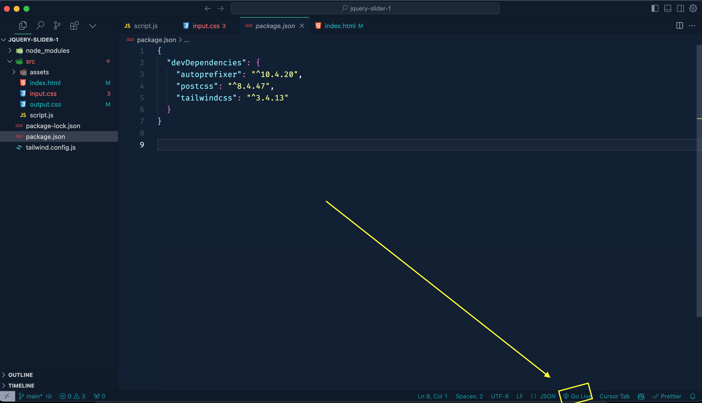

Carousel - Taiwlind,Materialize,JQuery
Documentation
Thank you for purchasing our Carousel
All the information in this documentation is well documented. I hope if you read the documentation well you will understand all the work well. If you get stuck somewhere or have difficulty understanding, you can definitely let me know. I will always be available to support. Thank so much.
Template features
- Build on Materialize latest
- Build with Tailwind CSS latest
- Google font include
- Fully Responsive Design
- Clean Code
- W3C Validated Code
- Cross Browser Support
- Well Documented
- No console error
You can direct show this template to click "Go Live"
- Now click "Go Live" in vs-code/cursor ; (must install any live extention) 
Setup Development Environment
- Install recommended version of NodeJS
- Use this command line on the terminal to navigate to the project root directory.
- Run those flowing commands.
-
npm install
- In Terminal run this script
-
npx tailwindcss -i ./src/input.css -o ./src/output.css --watch
Dependencies
Here are the dependencies (package.json) list which being used in the Carousel Template:
{
"devDependencies": {
"autoprefixer": "^10.4.20",
"postcss": "^8.4.47",
"tailwindcss": "^3.4.13"
}
}
Folder Structure
/project-root
│
├── src /* Source files directory containing HTML, CSS, and JavaScript files */
│ ├── output.css /* Compiled CSS file that styles the website */
│ ├── input.css /* Source CSS file where styles are written and then processed */
│ ├── script.js /* JavaScript file for website interactivity */
│ └── index.html /* Main HTML file that serves as the entry point for the website */
│
├── assets /* Directory containing placeholder images for the website */
│ ├── placeholder-kishorgonj.jpg /* Image placeholder for Kishorgonj */
│ ├── placeholder-dhaka.jpg /* Image placeholder for Dhaka */
│ ├── placeholder-kuakata.jpg /* Image placeholder for Kuakata */
│ ├── placeholder-rangpur.jpg /* Image placeholder for Rangpur */
│ ├── placeholder-manikganj.jpg /* Image placeholder for Manikganj */
│ └── placeholder-mini.jpg /* Small placeholder image */
│
└── README.md /* Documentation file describing the project */
Fonts
On this template use two awesome fonts. Those are Poppins, Inter and one are common font DM-Sans. You can change the font to the one that suits you best.
Custom Css
you can use your custom css. Just go this path and add your css code.
Customization
Change slider Image :
Change Background :
Change Background and Content Dynamically :
Credits
All credits and all node package manager information is included.
Images :
Plugin / NPM package :
Version
Version : 0.1.0
Web, November 6, 2024
- Initial released